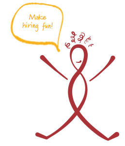

Our Story
We take a different approach. Creative Alignments is the brainchild of Peggy Shell, who began her recruiting/HR career in 1999 as the Director of Human Resources at Tesser, a nationally recognized brand and design agency based in San Francisco. While at Tesser, Peggy occasionally hired traditional contingency-based or contract recruiters to augment her recruiting efforts and expand the candidate pool. She quickly discovered that going this route was often cumbersome and impersonal, and it didn’t yield optimal results despite its steep price tag.
When Peggy chose to become an independent recruiting and HR consultant in 2003, she adopted an hourly billing model for her customizable recruiting and HR services. Her clients responded very favorably to her high quality work coupled with terrific cost savings.
After seven successful years as an independent consultant, during which Peggy developed and refined a scalable model to grow the business, Creative Alignments was born in October 2010. Initially focused on the creative services industry, it didn’t take long for us to grow our own team and diversify into the high tech and natural food and product industries. We also began working onsite for our clients who were in a rapid growth mode, as they turned to us to hire 30-80 people for them annually.
Continuing to grow at our own very healthy pace, Creative Alignments is now comprised of a core team of experienced recruiting and HR professionals who serve our dozens of corporate clients in a wide variety of industries. Our talented team led by Peggy and her two partners, Chuck McCoy and Katie Johnstone, is headquartered in Boulder, Colorado.
